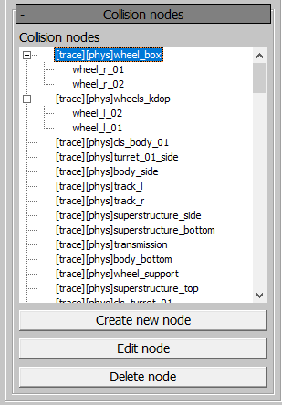
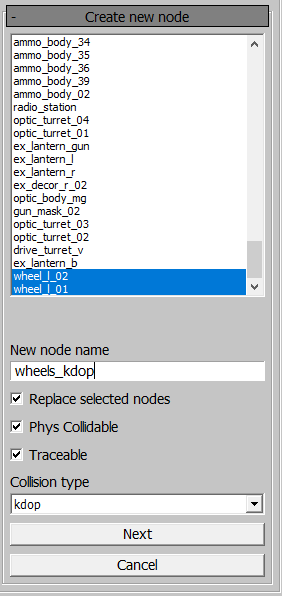
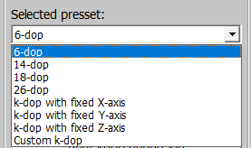
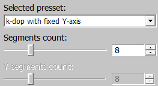
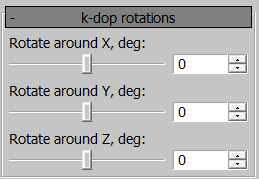
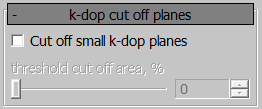
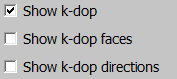
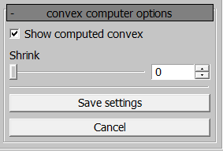
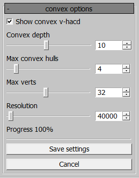

Collision Generation for Assets in Asset Viewer
Overview
The Asset Viewer now supports the ability
to generate new collision nodes from a combination of original nodes. These
nodes can be built for assets through the daBuild process.
A new node can be of one of the following six types:
mesh,box,sphere– merges the selected nodes into the corresponding primitive.k-dop(discrete oriented polytope) – a bounding volume for a specific geometry. The generation algorithm “wraps” the original mesh using predefined directions. After export, the collision type becomesconvex.The
kink-doprepresents the number of initial directions used for generation.convex computer– creates a convex shape around the selected nodes.convex v-hacd– decomposes the mesh of the selected nodes, breaking the geometry into multiple convex nodes. For more details on the algorithm, refer to the original repository.
Parameters in Asset Viewer
In the properties panel for collision assets, a tree of nodes available for merging is now displayed.
Collision Nodes Panel
{kind=link}
This panel shows the collision node tree. The node prefixes indicate their flags. If a node is merged from multiple nodes, its original child nodes will be displayed. Merged nodes can be edited or deleted.
Create New Node Panel
{kind=link}
When creating a new node or editing an existing one, you can:
Select nodes to include in the new node during generation.
Assign a unique name to the node, even if it replaces child nodes during the process.
Set the flag for whether the selected nodes will be replaced. If nodes are replaced, they will not be exported.
Set the
Phys CollidableandTraceableflags.Choose a collision type for the new node from the six types described earlier.
Viewport Display Option
For mesh, box, and sphere types, the result will be displayed in the
viewport and can be saved. For k-dop, convex computer, and convex v-hacd
types, the next step involves generating based on the selected parameters.
{kind=link}
Clicking on a node in the viewport will highlight it in the list of selected
nodes. Holding Ctrl allows for multiple node selection.
k-dop Node Generation Parameters
Selected Preset
 {kind=link}
{kind=link}
Select a preset for the chosen nodes. The following presets are available for
k-dop generation:
6-dop– regular box.14-dop– basic 6 directions + 8 corner directions.18-dop– basic 6 directions + 12 face directions.26-dop– combines face and corner directions from14-dopand18-dop.k-dop with fixed X-axis– generatesk-dopwith a fixed number of segments around the X-axis.k-dop with fixed Y-axis– generatesk-dopwith a fixed number of segments around the Y-axis.k-dop with fixed Z-axis– generatesk-dopwith a fixed number of segments around the Z-axis.Custom k-dop– generatesk-dopwith a custom number of segments around the X and Y axes.
The number of segments can vary from 4 to 20 with an increment of 1.
k-dop Rotations
{kind=link}
Rotate the k-dop around 3 axes to better match the original mesh.
k-dop Cut Off Planes
{kind=link}
For optimization, small-area planes can be trimmed relative to the plane with the largest area. The maximum trim value is 40%.
Show k-dop
{kind=link}
The k-dop can be displayed in several ways:
Drawing planes.
Drawing triangles.
Drawing directions from the center, with a distance to the corresponding plane.
Example: Generating an 18-dop.
{kind=link}
Convex Computer Node Generation Parameters
{kind=link}
A convex will be generated around the selected nodes. Using the Shrink
parameter, the shell can be “shrunk” inward toward the selected mesh.
Example: Generating a convex computer.
{kind=link}
Convex v-hacd Node Generation Parameters
{kind=link}
This generation method is governed by four parameters:
Convex depth– recursion depth of the algorithm. Lower values lead to earlier exits from the algorithm, resulting in rougher convex shapes.Max convex hulls– the number of convex nodes generated by the algorithm. If the value is 1, it is more efficient to useconvex computerto reduce asset export time.Max verts– the maximum number of vertices for a single convex node.Resolution– voxelization resolution. Higher values produce more accurate results, but also increase export time.
Note
Some parameter combinations may result in invalid geometry. In such cases, the
result cannot be saved, and it is recommended to adjust the parameters, for
example, by incrementing or decrementing the Resolution by one step.
Example: Generating a convex v-hacd.
{kind=link}
To save all changes, press Ctrl+S. If this is the first time saving changes
for the asset, a .collision.blk file will be created alongside the .dag
file. The exported result will only be visible after restarting the Asset
Viewer. When editing, the exported result is displayed immediately after
saving.
If a node previously exported is selected, it will revert to its original
geometry for editing. If no changes are made, switching to a different asset
will restore the .collision.blk file.
Note
If a crash occurs while working with collisions, data loss may occur.
Parameters in .blk
Generation parameters are stored in the .collision.blk file within the
nodes{} block. This block lists all nodes and their generation parameters.
Common Parameters
collision:t– type of collision for node generation. Possible values:"mesh""box""sphere""kdop""convexComputer""convexVhacd"
replaceNodes:b– indicates whether the original nodes are replaced during generation.isPhysCollidable:b,isTraceable:b– flags set for the node.refNodes{}– block with the names of the nodes used as a reference for generation.
k-dop Parameters
kdopPreset:i– preset index:0– 6-dop.1– 14-dop.2– 18-dop.3– 26-dop.4– k-dop with fixed X-axis.5– k-dop with fixed Y-axis.6– k-dop with fixed Z-axis.7– Custom k-dop.
kdopSegmentsX:i,kdopSegmentsY:i– number of segments.kdopRotX:i,kdopRotY:i,kdopRotZ:i– rotation around axes in degrees.cutOffThreshold:r– trim percentage of the maximum plane area.
Convex Computer Parameters
shrink:r– amount to shrink the shell inward toward the selected mesh.
Convex v-hacd Parameters
convexDepth:i– recursion depth of the algorithm.maxConvexHulls:i– number of convex nodes generated.maxConvexVerts:i– maximum number of vertices for a single convex node.convexResolution:i– voxelization resolution used by the algorithm.